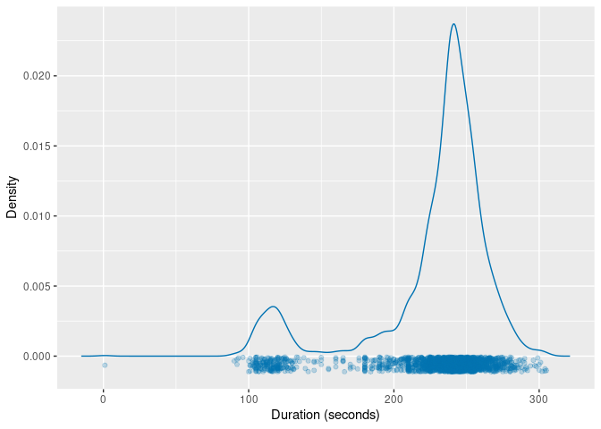
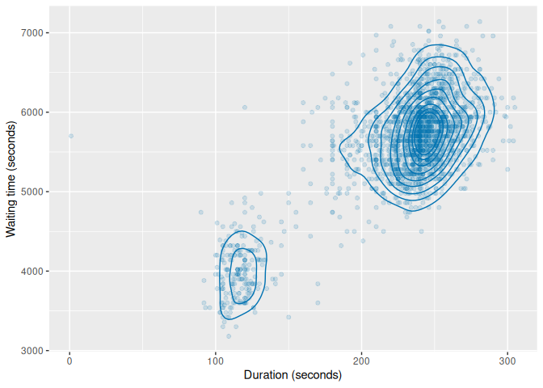
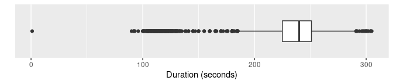
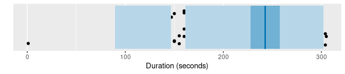
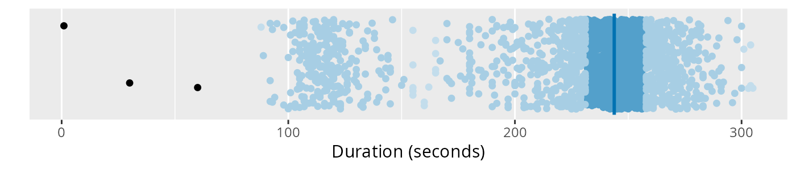
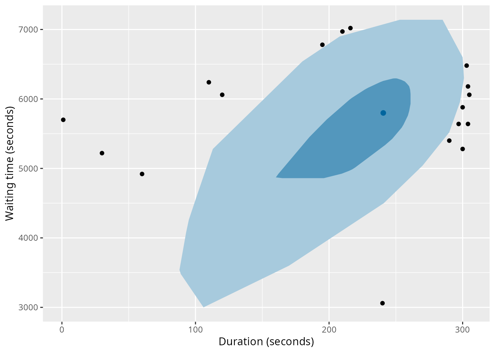
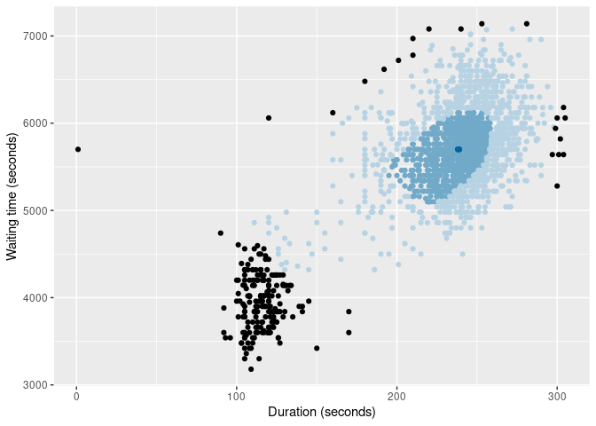
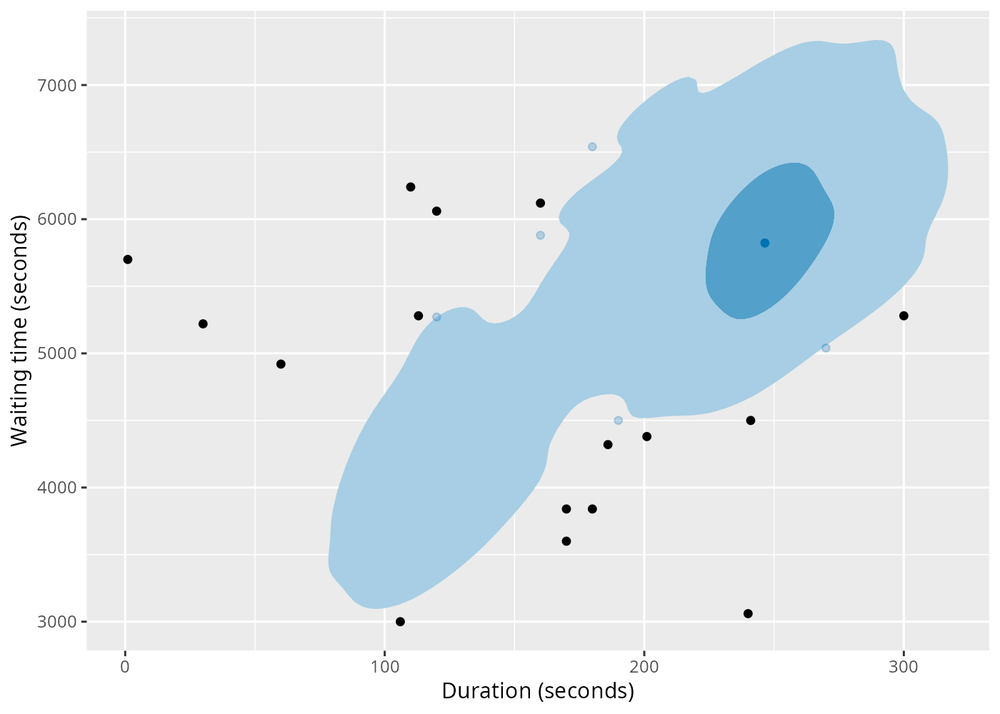
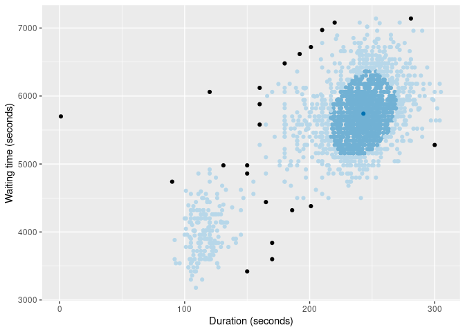

Overview
The weird package contains functions and data used in the book That’s Weird: Anomaly Detection Using R by Rob J Hyndman. It also loads several packages needed to do the analysis described in the book.
Installation
You can install the stable version from CRAN with:
install.packages("weird")You can install the development version of weird from GitHub with:
# install.packages("devtools")
devtools::install_github("robjhyndman/weird-package")Usage
library(weird) will load the following packages:
- dplyr, for data manipulation.
- ggplot2, for data visualisation.
- distributional, for handling probability distributions.
You also get a condensed summary of conflicts with other packages you have loaded:
library(weird)
#> ── Attaching packages ────────────────────────────────────────────────────────── weird 1.0.2.9000 ──
#> ✔ dplyr 1.1.4 ✔ distributional 0.5.0
#> ✔ ggplot2 3.5.1
#> ── Conflicts ──────────────────────────────────────────────────────────────────── weird_conflicts ──
#> ✖ dplyr::filter() masks stats::filter()
#> ✖ dplyr::lag() masks stats::lag()Example: Old Faithful Geyser data
The oldfaithful data set contains eruption data from the Old Faithful Geyser in Yellowstone National Park, Wyoming, USA, from 1 January 2015 to 1 October 2021. The data were obtained from the geysertimes.org website. Recordings are incomplete, especially during the winter months when observers may not be present. There also appear to be some recording errors. The data set contains 2261 observations of 3 variables: time giving the time at which each eruption began, duration giving the length of the eruption in seconds, and waiting giving the time to the next eruption in seconds. In the analysis below, we omit the eruption with duration greater than 1 hour as this is likely to be a recording error. Some of the long waiting values are probably due to omitted eruptions, and so we also omit eruptions with waiting greater than 2 hours.
oldfaithful
#> # A tibble: 2,261 × 3
#> time duration waiting
#> <dttm> <dbl> <dbl>
#> 1 2015-01-02 14:53:00 271 5040
#> 2 2015-01-09 23:55:00 247 6060
#> 3 2015-02-07 00:49:00 203 5460
#> 4 2015-02-14 01:09:00 195 5221
#> 5 2015-02-21 01:12:00 210 5401
#> 6 2015-02-28 01:11:00 185 5520
#> 7 2015-03-07 00:50:00 160 5281
#> 8 2015-03-13 21:57:00 226 6000
#> 9 2015-03-13 23:37:00 190 5341
#> 10 2015-03-20 22:26:00 102 3961
#> # ℹ 2,251 more rowsKernel density estimates
The package provides the kde_bandwidth() function for estimating the bandwidth of a kernel density estimate, dist_kde() for constructing the distribution, and gg_density() for plotting the resulting density. The figure below shows the kernel density estimate of the duration variable obtained using these functions.
of <- oldfaithful |>
filter(duration < 3600, waiting < 7200)
dist_kde(of$duration) |>
gg_density(show_points = TRUE, jitter = TRUE) +
labs(x = "Duration (seconds)")
The same functions also work with bivariate data. The figure below shows the kernel density estimate of the duration and waiting variables.
of |>
select(duration, waiting) |>
dist_kde() |>
gg_density(show_points = TRUE, alpha = 0.15) +
labs(x = "Duration (seconds)", y = "Waiting time (seconds)")
Statistical tests
Some old methods of anomaly detection used statistical tests. While these are not recommended, they are still widely used, and are provided in the package for comparison purposes.
of |> filter(peirce_anomalies(duration))
#> # A tibble: 1 × 3
#> time duration waiting
#> <dttm> <dbl> <dbl>
#> 1 2018-04-25 19:08:00 1 5700
of |> filter(chauvenet_anomalies(duration))
#> # A tibble: 1 × 3
#> time duration waiting
#> <dttm> <dbl> <dbl>
#> 1 2018-04-25 19:08:00 1 5700
of |> filter(grubbs_anomalies(duration))
#> # A tibble: 1 × 3
#> time duration waiting
#> <dttm> <dbl> <dbl>
#> 1 2018-04-25 19:08:00 1 5700
of |> filter(dixon_anomalies(duration))
#> # A tibble: 1 × 3
#> time duration waiting
#> <dttm> <dbl> <dbl>
#> 1 2018-04-25 19:08:00 1 5700In this example, they only detect the tiny 1-second duration, which is almost certainly a recording error. An explanation of these tests is provided in Chapter 4 of the book
Boxplots
Boxplots are widely used for anomaly detection. Here are three variations of boxplots applied to the duration variable.
of |>
ggplot(aes(x = duration)) +
geom_boxplot() +
scale_y_discrete() +
labs(y = "", x = "Duration (seconds)")
of |> gg_hdrboxplot(duration) +
labs(x = "Duration (seconds)")
of |> gg_hdrboxplot(duration, show_points = TRUE) +
labs(x = "Duration (seconds)")
The latter two plots are highest density region (HDR) boxplots, which allow the bimodality of the data to be seen. The dark shaded region contains 50% of the observations, while the lighter shaded region contains 99% of the observations. The plots use vertical jittering to reduce overplotting, and highlight potential outliers (those points lying outside the 99% HDR). An explanation of these plots is provided in Chapter 5 of the book.
It is also possible to produce bivariate boxplots. Several variations are provided in the package. Here are two types of bagplot.
of |>
gg_bagplot(duration, waiting) +
labs(x = "Duration (seconds)", y = "Waiting time (seconds)")
of |>
gg_bagplot(duration, waiting, scatterplot = TRUE) +
labs(x = "Duration (seconds)", y = "Waiting time (seconds)")
And here are two types of HDR boxplot
of |>
gg_hdrboxplot(duration, waiting) +
labs(x = "Duration (seconds)", y = "Waiting time (seconds)")
of |>
gg_hdrboxplot(duration, waiting, scatterplot = TRUE) +
labs(x = "Duration (seconds)", y = "Waiting time (seconds)")
The latter two plots show possible outliers in black (again, defined as points outside the 99% HDR).
Scoring functions
Several functions are provided for providing anomaly scores for all observations.
- The
surprisals()function uses either a fitted statistical model, or a kernel density estimate, to compute density scores. - The
stray_scores()function uses the stray algorithm to compute anomaly scores. - The
lof_scores()function uses local outlier factors to compute anomaly scores. - The
glosh_scores()function uses the Global-Local Outlier Score from Hierarchies algorithm to compute anomaly scores. - The
lookout_prob()function uses the lookout algorithm of Kandanaarachchi & Hyndman (2022) to compute anomaly probabilities.
Here are the top 0.02% most anomalous observations identified by each of the methods.
of |>
mutate(
surprisal = surprisals(cbind(duration, waiting), probability = FALSE),
strayscore = stray_scores(cbind(duration, waiting)),
lofscore = lof_scores(cbind(duration, waiting), k = 150),
gloshscore = glosh_scores(cbind(duration, waiting)),
lookout = lookout_prob(cbind(duration, waiting))
) |>
filter(
surprisal > quantile(surprisal, prob = 0.998) |
strayscore > quantile(strayscore, prob = 0.998) |
lofscore > quantile(lofscore, prob = 0.998) |
gloshscore > quantile(gloshscore, prob = 0.998) |
lookout < 0.002
) |>
arrange(lookout)
#> # A tibble: 10 × 8
#> time duration waiting surprisal strayscore lofscore gloshscore lookout
#> <dttm> <dbl> <dbl> <dbl> <dbl> <dbl> <dbl> <dbl>
#> 1 2018-04-25 19:08:00 1 5700 17.9 0.380 3.78 1 0
#> 2 2020-06-01 21:04:00 120 6060 17.8 0.132 1.88 1 3.99e-10
#> 3 2021-01-22 18:35:00 170 3600 16.9 0.0606 1.09 0.860 4.83e- 5
#> 4 2020-08-31 09:56:00 170 3840 16.7 0.0606 1.01 0.816 4.11e- 4
#> 5 2015-11-21 20:27:00 150 3420 16.2 0.0772 1.27 1 4.10e- 3
#> 6 2020-10-15 17:11:00 220 7080 15.7 0.0429 2.42 1 3.46e- 2
#> 7 2017-08-12 13:14:00 120 4920 15.0 0.0690 1.53 1 1.42e- 1
#> 8 2017-09-22 18:51:00 281 7140 15.0 0.0333 2.64 1 1.81e- 1
#> 9 2020-05-18 21:21:00 272 7080 14.5 0.0333 2.42 1 4.02e- 1
#> 10 2018-09-22 16:37:00 253 7140 14.6 0.0200 2.63 1 4.05e- 1The surprisals() function can also compute the probability of obtaining surprisal values at least as extreme as those observed. In fact, this is the default behaviour, obtained when probability = TRUE.
of |>
mutate(
surprisal = surprisals(cbind(duration, waiting), probability = FALSE),
prob = surprisals(cbind(duration, waiting))
) |>
arrange(prob)
#> # A tibble: 2,197 × 5
#> time duration waiting surprisal prob
#> <dttm> <dbl> <dbl> <dbl> <dbl>
#> 1 2018-04-25 19:08:00 1 5700 17.9 0.000455
#> 2 2020-06-01 21:04:00 120 6060 17.8 0.000910
#> 3 2021-01-22 18:35:00 170 3600 16.9 0.00137
#> 4 2020-08-31 09:56:00 170 3840 16.7 0.00182
#> 5 2015-11-21 20:27:00 150 3420 16.2 0.00228
#> 6 2017-05-03 06:19:00 90 4740 16.2 0.00273
#> 7 2020-09-16 14:44:00 160 6120 16.1 0.00319
#> 8 2020-07-23 23:17:00 186 4320 16.1 0.00364
#> 9 2019-07-25 06:32:00 300 5280 15.9 0.00410
#> 10 2020-09-15 18:01:00 160 5880 15.9 0.00455
#> # ℹ 2,187 more rowsRobust multivariate scaling
Some anomaly detection methods require the data to be scaled first, so all observations are on the same scale. However, many scaling methods are not robust to anomalies. The mvscale() function provides a multivariate robust scaling method, that optionally takes account of the relationships betwen variables, and uses robust estimates of center, scale and covariance by default. The centers are removed using medians, the scale function is the IQR, and the covariance matrix is estimated using a robust OGK estimate. The data are scaled using the Cholesky decomposition of the inverse covariance. Then the scaled data are returned. The scaled variables are rotated to be orthogonal, so are renamed as z1, z2, etc. Non-rotated scaling is possible by setting cov = NULL.
mvscale(of)
#> Warning in mvscale(of): Ignoring non-numeric columns: time
#> # A tibble: 2,197 × 3
#> time z1 z2
#> <dttm> <dbl> <dbl>
#> 1 2015-01-02 14:53:00 2.02 -1.33
#> 2 2015-01-09 23:55:00 0.0758 0.728
#> 3 2015-02-07 00:49:00 -1.64 -0.485
#> 4 2015-02-14 01:09:00 -1.86 -0.968
#> 5 2015-02-21 01:12:00 -1.25 -0.604
#> 6 2015-02-28 01:11:00 -2.57 -0.364
#> 7 2015-03-07 00:50:00 -3.63 -0.847
#> 8 2015-03-13 21:57:00 -0.913 0.606
#> 9 2015-03-13 23:37:00 -2.19 -0.726
#> 10 2015-03-20 22:26:00 -5.50 -3.51
#> # ℹ 2,187 more rows
mvscale(of, cov = NULL)
#> Warning in mvscale(of, cov = NULL): Ignoring non-numeric columns: time
#> # A tibble: 2,197 × 3
#> time duration waiting
#> <dttm> <dbl> <dbl>
#> 1 2015-01-02 14:53:00 1.40 -1.24
#> 2 2015-01-09 23:55:00 0.316 0.676
#> 3 2015-02-07 00:49:00 -1.67 -0.451
#> 4 2015-02-14 01:09:00 -2.03 -0.900
#> 5 2015-02-21 01:12:00 -1.35 -0.562
#> 6 2015-02-28 01:11:00 -2.48 -0.338
#> 7 2015-03-07 00:50:00 -3.61 -0.787
#> 8 2015-03-13 21:57:00 -0.631 0.564
#> 9 2015-03-13 23:37:00 -2.25 -0.675
#> 10 2015-03-20 22:26:00 -6.22 -3.27
#> # ℹ 2,187 more rows